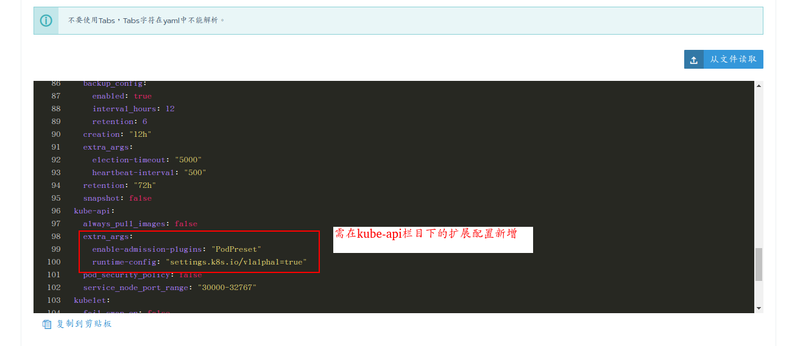

Pod Preset是一种API资源，用来在创建pod时向其注入运行时需要的额外信息，通过使用label selector确定为pod应用那些Presets。
>K8S激活Pod Preset
Pod Preset目前还是alpha阶段，默认是没有激活的，对于手动以及二进制安装的k8s集群可以通过以下步骤激活:
编辑/etc/kubernetes/manifests/kube-apiserver.yaml，
• 在-runtime-config增加settings.k8s.io/v1alpha1=true
• 在--admission-control增加PodPreset`
保存后kubelet会自动重启kube-apiserver组件。
>Rancher 激活Pod Preset
对于通过Rancher构建的kubernetes集群，配置略有区别，则需要通过rancher的ui中进行修改实现：
1.登录rancher的ui，进入需开启PodPreset的K8s集群，选择主机，在点击编辑集群按钮。
2.再次选择“编辑yml”选项后进行新增参数。
3.如图所示，在集群的yml中新增红色框标示部分。

编辑yml后，需要在kube-api下增加如下三行即可开启podpreset： extra_args: enable-admission-plugins: “PodPreset” runtime-config: “settings.k8s.io/v1alpha1=true”
新增后，保存后集群将重新开始初始化，期间会有短暂的中断，很快自动恢复正常。
详细代码如下：
addon_job_timeout: 30
authentication:
strategy: "x509|webhook"
bastion_host:
ssh_agent_auth: false
ignore_docker_version: true
ingress:
provider: "nginx"
kubernetes_version: "v1.13.5-rancher1-2"
monitoring:
provider: "metrics-server"
network:
options:
flannel_backend_type: "vxlan"
plugin: "flannel"
restore:
restore: false
services:
etcd:
backup_config:
enabled: true
interval_hours: 12
retention: 6
creation: "12h"
extra_args:
election-timeout: "5000"
heartbeat-interval: "500"
retention: "72h"
snapshot: false
kube-api:
always_pull_images: false
# 在kube-api下增加如下三行即可开启podpreset
extra_args:
enable-admission-plugins: "PodPreset"
runtime-config: "settings.k8s.io/v1alpha1=true"
pod_security_policy: false
service_node_port_range: "30000-32767"
kubelet:
fail_swap_on: false
ssh_agent_auth: false
#
# # 自定义Rancher参数
#
docker_root_dir: "/var/lib/docker"
enable_cluster_alerting: false
enable_cluster_monitoring: false
enable_network_policy: false
local_cluster_auth_endpoint:
enabled: true
name: "nyan-k8s-02"
使用示例：配置podpreset实现只对namespace为epp的容器开启时间同步
apiVersion: settings.k8s.io/v1alpha1
kind: PodPreset
metadata:
name: allow-tz-env
namespace: epp
spec:
selector:
matchLabels:
env:
- name: TZ
value: Asia/Shanghai
就此完成。
PS: 对于敏感型的kubernetes平台的业务，建议在使用构建kubernetes后及时开启PodPreset，否则在线上直接开启，会造成服务的短暂性的中断，请务必慎用。